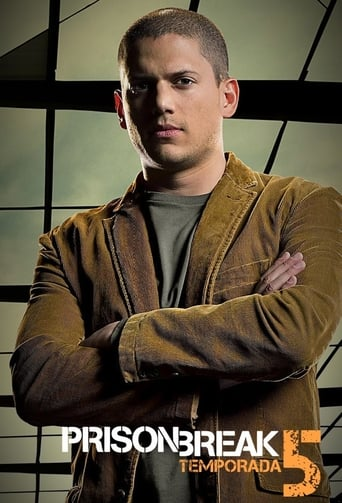
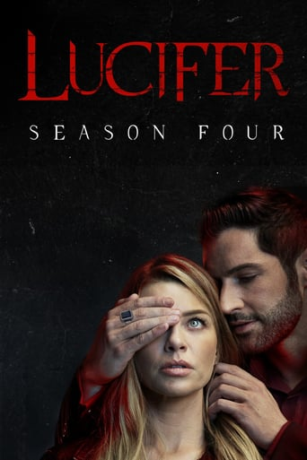
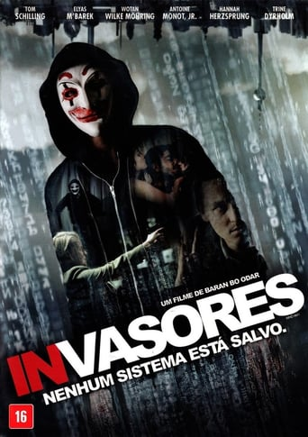

Prison Break
|  | Michael Scofield, é um homem desesperado numa situação desesperadora. Seu irmão, Lincoln Burrows, está no corredor da morte e será executado em alguns meses, após ser condenado por um assassinato que Michael está convencido que Lincoln não cometeu. Sem outras opções e com o tempo diminuindo, Michael assalta um banco para que ele seja preso e levado para a penitenciária estadual Fox River, o mesmo local onde seu irmão está cumprindo pena. Uma vez lá dentro, Michael um engenheiro civil com as plantas da prisão começa a executar um elaborado plano para libertar Lincoln e provar a inocência dele. |
Lucifer
|  | Lúcifer, entediado de sua vida amuada no inferno, vem morar em Los Angeles. Enquanto estiver lá, ele ajuda a humanidade com suas misérias através de sua experiência e habilidades telepáticas para trazer os desejos e pensamentos mais profundos das pessoas. Enquanto se encontra com uma garota em sua boate, um tiroteio envolvendo ele e a garota o leva a se tornar um consultor da polícia de Los Angeles que tenta punir as pessoas por seus crimes através da lei e da justiça. |
Mr. Robot
 |
Elliot é um jovem programador que sofre de uma desordem que o torna anti-social. Acreditando que a única forma de se conectar com as pessoas é hackeando suas vidas, ele alia seu conhecimento ao fato de trabalhar em uma empresa de segurança online para proteger aqueles que ele ama daqueles que tentam, de alguma forma, prejudicá-los. Suas atividades chamam a atenção de Mr. Robot, um misterioso anarquista que convida Elliot a fazer parte de uma organização que atua na ilegalidade com o objetivo de derrubar as corporações americanas. |
The 100
| Noventa e Sete anos antes, um apocalipse nuclear dizimou o planeta Terra e destruiu a civilização. Os únicos sobreviventes foram os 400 habitantes de 12 estações espaciais que estavam em órbita durante o acontecimento. Depois de tantos anos, a população das aeronaves aumentou e os recursos estão quase acabando, o que pode significar o fim dos seres humanos. Por isso, os comandantes enviam para a Terra cem jovens prisioneiros, na tentativa de testar a situação no nosso planeta e descobrir se existe a possibilidade de retorno ao local. Além de lidarem com as próprias diferenças, o grupo precisa se unir para enfrentar os perigos que os aguardam por causa da radiação. Para complicar, tudo indica que eles não estão sozinhos. |
Invasores - Nenhum Sistema Está à Salvo
|  | Benjamin é invisível, um ninguem. Isso muda abruptamente quando ele conhece o carismático Max. Mesmo que eles não pareçam mais diferentes do lado de fora, eles compartilham o mesmo interesse: hacking. Junto com os amigos de Max, o impulsivo Stephan e o paranóico Paul, eles formam o coletivo subversivo Hacker CLAY. CLAY provoca com divertidas campanhas e fala por toda uma geração. Pela primeira vez em sua vida, Benjamin é parte de alguma coisa e até mesmo a atraente Marie começa a notá-lo. Mas a diversão se transforma em um perigo mortal quando o CLAY aparece no Bundeskriminalamt um escritório Federal de Polícia Criminal do BKA, bem como na lista dos mais procurados da Europol. Caçado pelo investigador de crimes cibernéticos Hanne Lindberg, Benjamin não é mais ninguém, mas sim um dos hackers mais procurados do mundo. |